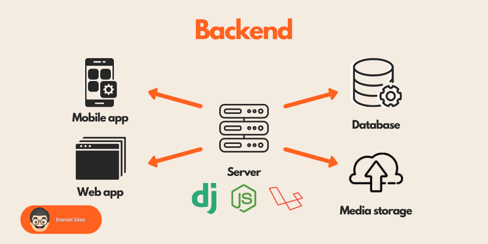

Este término es utilizado para referirse al área lógica de toda página web.
Nos referimos a la arquitectura interna del sitio que asegura que todos elementos desarrollen la función correcta.
No está visible a ojos del usuario y no incluye ningún tipo de elemento gráfico.
Es la función de ingeniería a desarrollar por el programador, ya que se basa únicamente en el código interno de la página.
Esta área es la encargada, además de la funcionalidad del sitio, de la seguridad y la optimización de los recursos.
Los encargados del desarrollo del Back End deben manejar eficientemente varios códigos de programación, en lenguajes como Java, PHP o .Net.
Estos desarrolladores deben ser meticulosos, dado que un descuido en su trabajo se traduce en la caída de la página.

Los lenguajes más utilizados dentro del Back-End son
ASP.NET: Es la plataforma de desarrollo web de Microsoft. Cuenta con las variantes de Web Forms y MVC.
PHP: Muy utilizado en algunos de los principales gestores de contenido como WordPress.
Ruby: También se utiliza su framework Ruby on rails.
Python: Se usa comúnmente con Django como framework.
Node.js: Más utilizado en los últimos tiempos, ya que utiliza un lenguaje similar al del lado del cliente (JavaScript).
Las herramientas más utilizadas por los programadores en esta área del desarrollo web son los compiladores y editores de código.
¿Qué funciones se gestionan desde el Back-End?
Desde el Back-End se llevan a cabo todas las funciones que hagan más simple el proceso de desarrollo.
Las acciones de lógica
Las conexiones con las bases de datos.
Desde el Back-End se usan las librerías del servidor web, ya sea para comprimir las imágenes de la web, para implementar temas de caché u otras.
También se mantiene la seguridad de los sitios web.
Gracias al Back-End se pueden optimizar los recursos a fin de que las páginas resulten más ligeras.
La importancia del Back-End
A lo largo de este artículo conoceremos qué es el Front-End y terminaremos de comprender su íntima relación con el Back-End.
Ambos elementos no pueden vivir el uno sin el otro, pero el Back-End es vital si queremos desarrollar un proyecto a medida para nuestra empresa
Para ilustrar esto, en el caso de un sitio web corporativo podemos tener a un diseñador gráfico que realice un nuevo diseño;
mientras que un experto en Front-End se encargará de maquetarlo, por ejemplo, en WordPress.
En este caso, como vemos, no haría falta contar con alguien que se encargue del Back-End, puesto que el propio WordPress asume determinadas funciones en este aspecto,
pero todo cambia cuando queremos construir un proyecto a la medida que requiera un plus de desarrollo. Es entonces cuando se hace esencial la figura del desarrollador Back-End, ampliamente usado por las agencias de desarrollo web.
Back End vs. Front End
No hace falta mucha deducción para entender que el Back-End es el especialista que desarrolla la parte de atrás, el soporte de una web, lo que nadie ve;
mientras que el experto en Front-End diseña lo de adelante, lo que sí se ve.
Por una parte, el encargado del Front-End está encargado de implementar todo lo que se relaciona con la parte visible de una web, con lo que el usuario entra en contacto al navegar por la página.
En términos generales, suele trabajar con los lenguajes HTML, CSS y JavaScript.
El trabajo de este resulta mucho más visual que el del encargado del Back-End; sin embargo, ambos deben trabajar juntos y en coordinación en cada proyecto que se emprenda, dado que un lado no se comprende sin el otro.
¿Cuál es el perfil de un desarrollador de Back-End?
Ser un desarrollador Back-End entraña una gran complejidad, puesto que requiere años de estudio,
práctica constante, seriedad, una alta capacidad de atención y muchas dosis de concentración
En primera instancia, debe manejar lo básico, que es la configuración de los servidores; o por lo menos,
debe conocer lo suficiente sobre este punto para poder hacer reportes al responsable de sistemas.
También debe saber administrar cuando menos un Content Management System (CMS),
preferiblemente WordPress que es el de mayor difusión.
La lógica y el orden deben ser los dos pilares en los que se fundamente su trabajo.
Debe conocer sobre metodologías de la programación,
sus fundamentos y manejar con soltura estos lenguajes, o por lo menos uno de ellos.